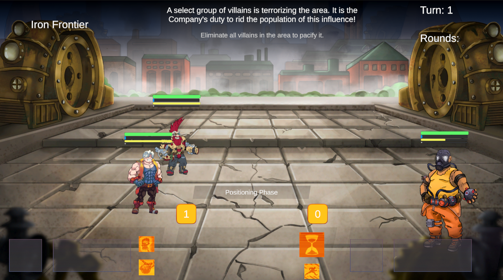
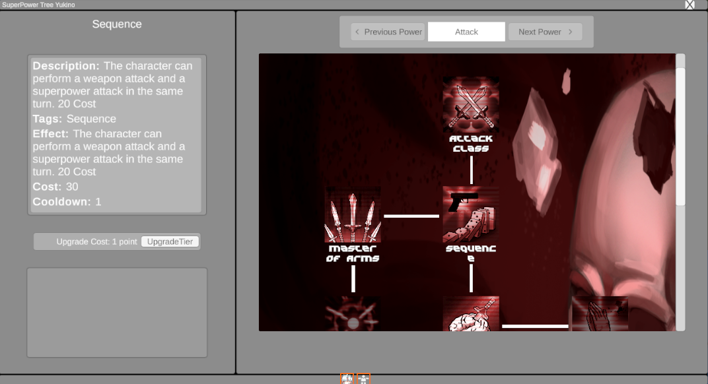
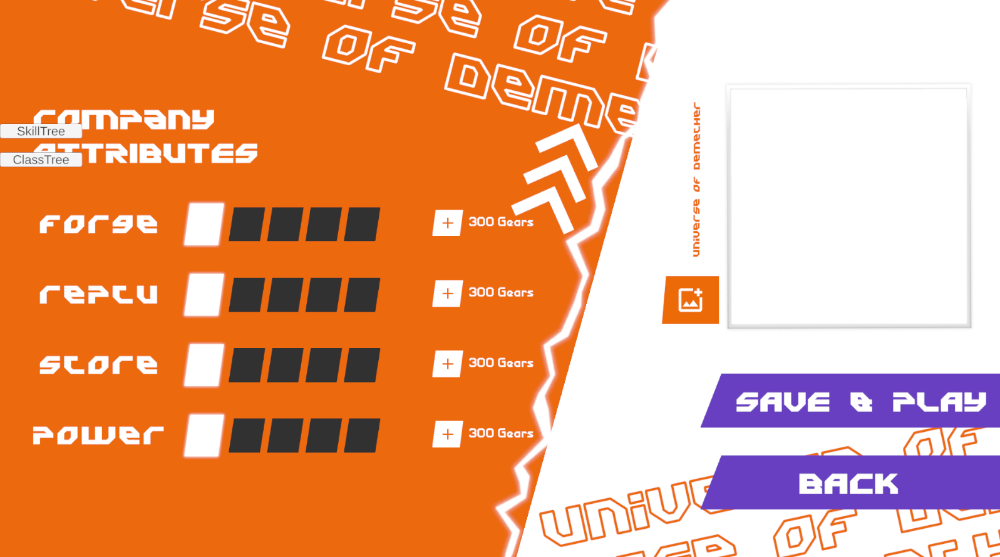

Cybersteam Heroes is an explosive roguelite RPG featuring turn-based tactical combat, where superheroes navigate an original world that melds Steampunk and Cyberpunk elements. In a post-`Digital Steam` revolution era, you lead a team of heroes on a quest to pacify a world torn between technology and humanity. By collecting mystical stones known as'Starshards'players have the freedom to build unique skill combinations from dozens of superpowers, opening up a vast array of strategies to defeat supervillains and restore order.
Knowledge I used:
Programming
Game Systems
Design Patterns
Scalable, Modular and Maintainable
Game development
Tools and Languages:
Unity
C#
DoTween
Jira
Figma
Copyright
All copyright and intellectual rights of this project belong to Plundervolt.
This is a gameplay of the state the game was paused/stopped with no expected return, many things and adjustments were missing, but unfortunately it was not possible to continue, at least for now.
The Game Systems
I worked as the lead developer and was responsible for the architecture, implementing from scratch several essential subsystems: movement on a hexagonal map, talent trees, an upgrade system, and a complete combat module — with configurable buffs, debuffs, and abilities. All routines were built with a focus on scalability (decoupled components, data-driven) and ease of maintenance).
I later led the integration of a second programmer, providing direct support in the implementation of enemy AI.

Talent trees were made to allow for high scalability and content creation. They are decoupled and use Scriptable Objects that carry talent information, as well as powers and passives that have their own managers to handle the information as expected by the OS. Several trees can also be built with their conditions and locks for unlocking where the system itself organizes and renders on the screen without the need to mess with the UI.

In addition to the talent tree, the system had Upgrades, which changed the start of all runs, the necessary systems were readapted in real time to deal with the upgrades chosen as needed, such as more gold, better items, more impactful battles and much more.

The UI/UX
The UI/UX was really fun to do, making the menus and interactions more natural and pleasant, the Design did a great job and it was very interesting to apply his ideas using DoTween and animations via script.
I was responsible for implementing the entire UI/UX of the game within Unity, ensuring responsiveness, fluidity and visual feedback in each interaction.
I used the DoTween library to animate transitions, pop-ups and microinteractions, reinforcing the sense of reward with particles and visual effects.
All screens were designed to balance clarity and visual appeal, with flexible and adaptable navigation logic for both beginners and experienced players.
I also created modular UI systems with reusable scripts and parameterized animations, facilitating future changes without direct dependence on designers.
The Conclusions
The final result of the project was not achieved due to the project's pause, but it was satisfying to see this universe emerging and becoming enjoyable in the way we dreamed of, unfortunately some content was too much for us to maintain the project for longer, it was a learning experience for all parties involved, from planning to execution, it was becoming something we could talk about that was fun.
The Final Result
It was an extraordinary experience to have participated in this project, to have challenged myself and learned a lot alongside very good and respectable professionals, our project leader Luis served from the beginning as a mentor for us, he was part of the development helping his collaborators, I am I am very grateful for all the learning I had during this time, and all the reflection I had on the process, moments when I think we could have acted or made different choices, this helps us grow and deal with future projects.
Contact Me
Thank you, your contact has been sent!
Sorry! Something happened and your email was not sent.
@ 2024 Akapaya. Todos os direitos reservados.
Akapaya, logotipo da Akapaya são marcas registradas de Akapaya
Arte desenvolvida por Thamires Dantas.
Design do site desenvolvido por Gregory Valentim.
Site desenvolvido por Gregory Valentim.